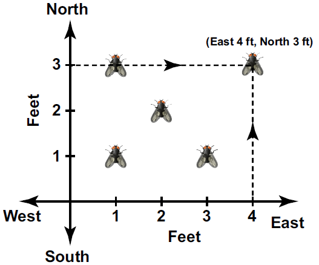
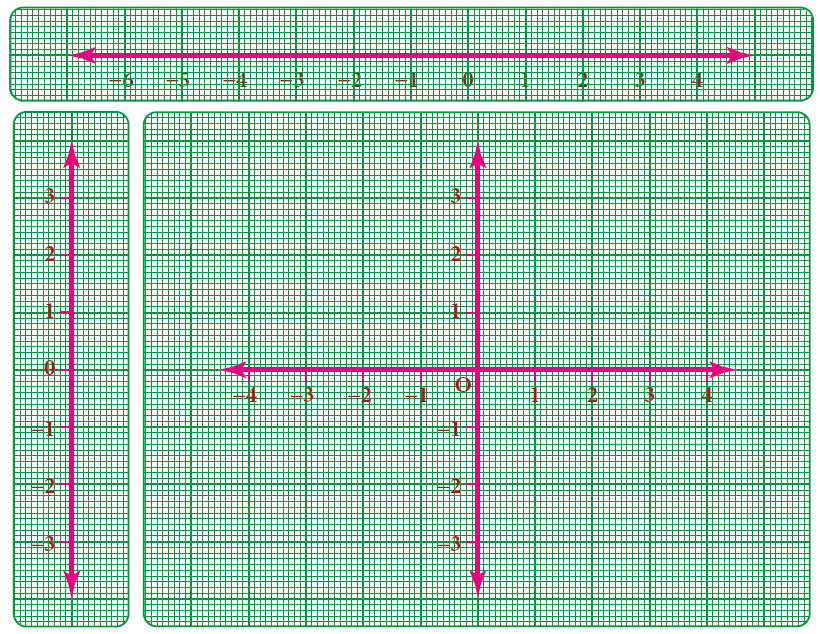
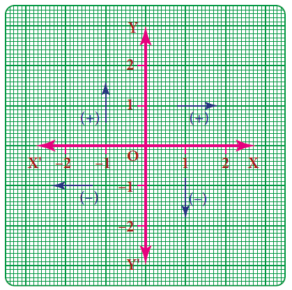
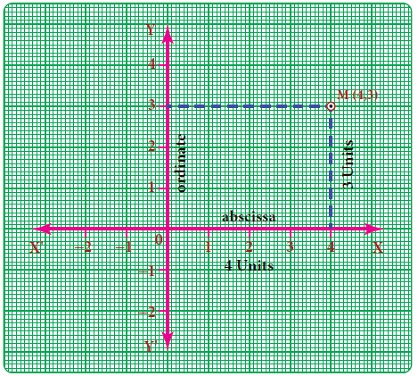
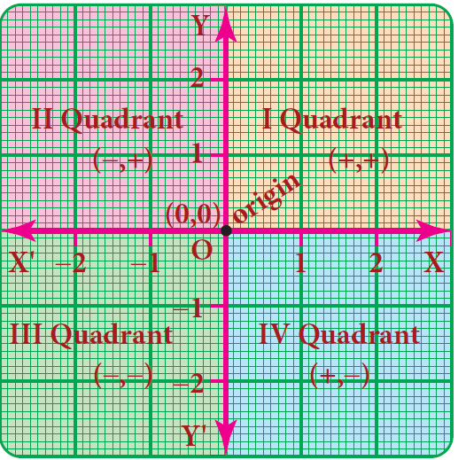
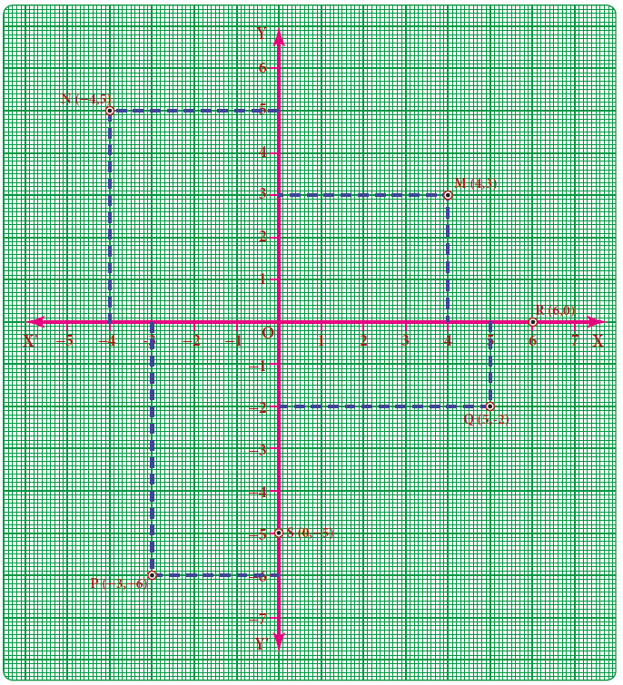

Box item
Age or Person |
now |
After 2 years |
Daughter |
x |
X+2 |
Mother |
5x |
5x +2 |
Given condition: After two years, Mother’s age equal to 4 times of Daughter's age
5x +2 is equal to 4 multiplied by open bracket x + 2 close bracket
5x + 2 is equal to 4x + 8
5x minus 4x is equal to 8 minus 2
X is equal to 6
Hence daughter’s present age is equal to 6 years;
and mother’s present age is equal to 5x is equal to 5 multiply 6 is equal to 30 years
Example 3.38
The denominator of a fraction is 3 more than its numerator. If 2 is added to the numerator and 9 is added to the denominator, the fraction becomes 5 divided 6. Find the original fraction.
Solution:
Let the original fraction be x divided by y
Page number 104
Given that y is equal to x+3. Open bracket Denominator is equal to Numerator + 3 close bracket.
Therefore, the fraction can be written as x divided by x+3. As per the given condition,x+2 the whole divided by x+3+9 is equal to 5 divided by 6
By cross multiplication, 6 multiplied by open bracket x+2 close bracket is equal to 5 multiplied by open bracket x+3+9 close bracket
6x+12 is equal to 5 multiplied by open bracket x+12 close bracket
6x+12 is equal to 5x+60
6x Minus 5x is equal to 60 minus 12
X is equal to 60 minus 12
X is equal to 48
Therefore, the original fraction is x divided by x+3 is equal to 48 divided by 48+3 is equal to 48 divided by 51
Example 3.39
The sum of the digits of a two digit number is 8. If 18 is added to the value of the number, its digits get reversed. Find the number.
Solution:
Let the two digit number be x y (that is ten’s digit is x , one’s digit is y ) Its value can be expressed as 10x+y
Given, x+y is equal to 8 which gives y is equal to 8 minus x
Therefore, its value is 10x+y
Is equal to 10x+8 minus x
Is equal to 9x+8
The new number is yx with value is 10 y+x
Is equal to 10 multiplied by open bracket 8 minus x close bracket +x
Is equal to 80 minus 9x
Given, when 18 is added to the given number x y gives new number y x
Open bracket 9x+8 close bracket plus 18 is equal to 80 minus 9x
This simplifies to 9x + 9x is equal to 80 minus 8 minus 18
18x is equal to 54
X is equal to 3 which implies that y is equal to 8 minus 3 is equal to 5
The two digit number is x y is equal to 10x+y which implies that 10 multiplied by 3+5 is equal to 30+5 is equal to 35
Example 3.40
From home, Rajan rides on his motorbike at 35 kilometre per hour and reaches his office 5 minutes late. If he had ridden at 50 kilometre per hour, he would have reached his office 4 minutes earlier. How far is his office from his home question mark
Solution:
Let the distance be ‘x’ kilometre. open bracket Recall that, time is equal to distance divided by speed close bracket
Box item
Speed 1 is equal to 35 kilometre per hour
Speed 2 is equal to 50 kilometre per hour
Time taken to cover ‘x’ kilometre at 35 kilometre per hour: T 1 is equal to x divided by
35 hour
Time taken to cover ‘x’ kilometre at 50 kilometre per hour: T 2 is equal to x divided by
50 hour
Page number 105
According to the problem, the difference between two timings
Is equal to 4 minus open bracket minus of 5 close bracket
is equal to 4+5 is equal to 9 minutes
is equal to 9 divided by 60 hour open bracket changing minutes to hour close bracket
Given, T 1 minus T 2 is equal to 9 divided by 60
X divided by 35 minus x divided 50 is equal to 9 divided by 60
using cross multiplication
10x minus 7x the whole divided by 350 is equal to 9 divided by 60
3x divided by 350 is equal to 9 divided by 60
X is equal to 9 divided by 60 multiply 350 divided by 3
The distance to his office x is equal to17 and half kilometre
Exercise 3.7
1 Fill in the blanks:
First one The solution of the equation ax+b is equal to 0 is DASH.
Second one If a and b are positive integers then the solution of the equation ax is equal to b has to be always DASH.
Third one One-sixth of a number when subtracted from the number itself gives 25. The number is DASH.
Fourth one If the angles of a triangle are in the ratio 2 is to 3 is to 4 then the difference between the greatest and the smallest angle is DASH.
Fifth one In an equation a+b is equal to 23 the value of a is 14 then the value of b is DASH.
2 Say True or False
First one “Sum of a number and two times that number is 48” can be written as y + 2y is equal to 48
Second one 5 multiplied by open bracket 3x plus 2 close bracket is equal to 3 multiplied by open bracket 5x minus 7 close bracket is a linear equation in one variable.
Third one x is equal to 25 is the solution of one third of a number is 10 less than the original number.
3 One number is seven times another. If their difference is 18, find the numbers.
4 The sum of three consecutive odd numbers is 75. Which is the largest among them question mark
5 The length of a rectangle is 1 divided 3of its breadth. If its perimeter is 64 metre, then find the length and breadth of the rectangle.
6 A total of 90 currency notes, consisting only of rupees 5 and rupees 10 denominations, amount to rupees 500. Find the number of notes in each denomination.
7 At present, Thenmozhi’s age is 5 years more than that of Murali’s age. Five years ago, the ratio of Thenmozhi’s age to Murali’s age was 3 is to 2. Find their present ages.
Page number 106
8 A number consists of two digits whose sum is 9. If 27 is subtracted from the original number, its digits are interchanged. Find the original number.
9 The denominator of a fraction exceeds its numerator by 8. If the numerator is increased by 17 and the denominator is decreased by 1, we get 3 divided by 2. Find the original fraction.
10 If a train runs at 60 kilo metre per hour it reaches its destination late by 15 minutes. But, if it runs at 85 kilometre per hour it is late by only 4 minutes. Find the distance covered by the train.
Objective Type Questions
11 Sum of a number and its half is 30 then the number is DASH.
Option (A) 15 Option (B) 20 Option (C) 25 Option (D) 40
12 The exterior angle of a triangle is 120 degree and one of its interior opposite angles 58 degree, then the other opposite interior angle is DASH.
Option (A) 62 degree Option (B) 72 degree Option (C) 78 degree Option (D) 68 degree
13 What sum of money will earn rupees 500 as simple interest in 1 year at 5 percentage per annum question mark
Option (A) 50000 Option (B) 30000 Option (C) 10000 Option (D) 5000
14 The product of L C M and H C F of two numbers is 24. If one of the numbers is 6, then the other number is DASH.
Option (A) 6 Option (B) 2 Option (C) 4 Option (D) 8
15 The largest number of the three consecutive numbers is x+1, then the smallest number is
Option (A) x Option (B) x+1 Option (C) x+2 Option (D) x minus 1

There was an instance in the 17th century when Rene Descartes, a famous mathematician became ill and from his bed, noticed an insect hovering over a corner and sitting at various places on the ceiling. He wanted to identify all the places where the insect sat on the ceiling. Immediately, he drew the top plane of the room in a paper, creating the horizontal and vertical lines. Based on these perpendicular lines, he used the directions and understood that the places of the insect can be spotted by the movement of the insect in the east, west, north and south directions. He called that place as open bracket x comma y close bracket in the plane which indicates two values, one open bracket x close bracket in the horizontal direction and the other open bracket y close bracket in the vertical direction (say east and north in this case). This is how the concept of graphs came into existence.
Graph is just a visual method for showing relationships between numbers. In the previous
class, we studied how to represent integers on a number line horizontally. Now take one more number line vertically. We take the graph sheet keeping both number lines mutually perpendicular to each other at ‘0’zero as given in the figure. The number lines and the marking integers should be placed along the dark lines of the graph sheet.
Page number 107

The intersecting point of the perpendicular lines ‘O’ represent the origin open bracket 0 comma 0 close bracket.
Cartesian system
Rene Descartes system of fixing a point with the help of two measurements, horizontal and vertical, is named as Cartesian system, in his honour. The horizontal line is named as X O X dash, called the X axis. The vertical line is named as Y O Y dash, called the Y axis. Both the axes are called coordinate axes. The plane containing the X axis and the Y axis is known as the coordinate plane or the Cartesian plane.

1. X co ordinate of a point is positive along O X and negative along O X dash
2. Y co ordinate of a point is positive along O Y and negative along O Y dash
A point represents a position in a plane. A point is denoted by a pair open bracket a comma b close bracket of two numbers ‘a’ and ‘b’ listed in a specific order in which ‘a’ represents the distance along the X axis and ‘b’ represents the distance along the Y axis. It is called an ordered pair open bracket a comma b close bracket . It helps us to locate precisely a point in the plane. Each point can be exactly identified by a pair of numbers. It is also clear that the point open bracket b comma a close bracket is not same as open bracket a comma b close bracket as they both indicate different orders.
Page number 108
We have, X O X dash and Y O Y dash as the co-ordinate axes and let ‘M’ be open bracket 4 commo 3 close bracket in the plane.
To locate ‘M’
step one you (always) start at O, a fixed point (which we have, agreed to call as origin),
Step two first, move 4 units along the horizontal direction (that is, the direction of x axis)
Step three and then trek along the y direction by 3 units. To understand how we have travelled to reach M, we denote by open bracket 4 comma 3 close bracket . 4 is called the x coordinate of M and 3 is called the y coordinate of M.
It is also habitual to name the x coordinate as abscissa and the y coordinate as ordinate. open bracket 4 comma 3 close bracket is as an ordered pair.

If instead of open bracket 4 comma 3 close bracket we write open bracket 3 comma 4 close bracket and try to mark it, will it represent ‘M’ again question mark
The coordinate axes divide the plane of the graph into four regions called quadrants.
It is a convention that the quadrants are named in the anti-clock wise sense starting from the positive side of the X axis.

Quadrant |
Sign |
Quadrant one the region X O Y |
X greater than 0, y greater than 0, then the coordinates are open bracket + comma + close bracket Examples: open bracket 5 comma 7 close bracket open bracket 2 comma 9 close bracket open bracket 10 comma 15 close bracket |
Quadrant two the region X dash O Y |
x less than 0 y greater than 0 then the coordinates are open bracket minus comma + close bracket Examples open bracket minus 2 comma 8 close bracket open bracket minus 1 comma 10 close bracket open bracket minus 5 comma 3 close bracket |
Quadrant three the region X dash O Y dash |
x less than 0 y less than 0 then the coordinates are open bracket minus comma minus close bracket Examples: open bracket minus 2 comma minus 3 close bracket open bracket minus 7 comma minus 1 close bracket open bracket minus 5 comma minus 7 close bracket |
Quadrant four the region X O Y dash |
x greater than 0 y less than 0 then the coordinates are open bracket + comma minus close bracket Examples : open bracket 1 comma minus 7 close bracket open bracket 4 comma minus 2 close bracket open bracket 9 comma minus 3 close bracket |
Page number 109
Coordinate of a point on the axes:
For example, open bracket 2 comma 0 close bracket open bracket minus 5 comma 0 close bracket open bracket 7 comma 0 close bracket are points on the ‘x’ axis.
For example, open bracket 0 comma 3 close bracket open bracket 0 comma minus 4 close bracket open bracket 0 comma 9 close bracket are points on the ‘y’ axis.
Consider the following points open bracket 4 comma 3 close bracket , open bracket minus 4 comma 5 close bracket , open bracket minus 3 comma minus 6 close bracket , open bracket 5 comma minus 2 close bracket , open bracket 6 comma 0 close bracket , open bracket 0 comma minus 5 close bracket

First one To locate open bracket 4 comma 3 close bracket .
Start from origin O, move 4 units along O X and from 4, move 3 units parallel to O Y to reach M open bracket 4 comma 3 close bracket.
Second one To locate open bracket minus 4 comma 5 close bracket
From the origin, move 4 units along O X dash and from minus 4, move 5 units’ parallel to O Y to reach N open bracket minus 4 comma 5 close bracket .
Third one To locate open bracket minus 3 comma, minus 6 close bracket
From the origin move 3 units along O X dash and from minus 3, move 6 units parallel to O Y dash to reach P open bracket minus 3, comma minus 6 close bracket .
Fourth one To locate open bracket 5 comma minus 2 close bracket
From the origin move 5 points along O X and from 5, move 2 units parallel to O Y dash to reach Q open bracket 5 comma minus 2 close bracket
Fifth one To locate open bracket 6 comma 0 close bracket and open bracket 0 comma minus 5 close bracket
In the given point open bracket 6 comma 0 close bracket , X coordinate is 6 and Y coordinate is zero. So, the point lies on the x axis. Move 6 units on O X from the origin to reach R open bracket 6 comma 0 close bracket.
In the given point open bracket 0 comma minus 5 close bracket X coordinate is zero and Y coordinate is open bracket minus 5 close bracket . So, the point lies on
Y axis. Move 5 units on O Y dash from the origin to reach S open bracket 0 comma minus 5 close bracket
Page number 110